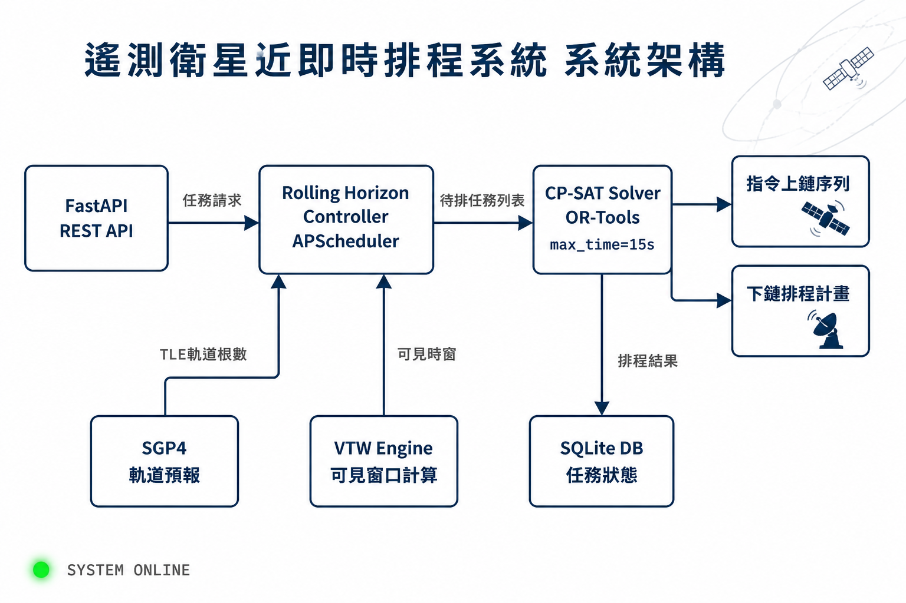

滾動視界排程器（Rolling Horizon Scheduler）
滾動視界（Rolling Horizon, RH）源自控制理論的模型預測控制（MPC）。 系統不一次排完整個時域，而是只優化「當前視窗」內的任務，執行「鎖定段」後向前滾動， 持續重新規劃。此設計讓排程器能即時應對動態任務到達與突發狀況。
| 參數 | 說明 | 衛星典型值 | 狀態 |
|---|---|---|---|
HORIZON_LENGTH |
每次排程的時間範圍 | 1–2 個軌道週期（90–180 分鐘） | ACTIVE |
LOCK_WINDOW |
已確定執行、不再重算的前段 | 10–30 分鐘 | ACTIVE |
ROLL_STEP |
每次向前推進的步長 | 等於 LOCK_WINDOW | ACTIVE |
TRIGGER_MODE |
何時觸發重新排程 | 週期性 + 事件驅動（混合） | HYBRID |
- 每 20 分鐘自動執行一次 re-plan
- 對應 APScheduler
IntervalTrigger - 確保計畫持續更新，即使無新事件
- 緊急任務插入：立即重算
- 雲層遮蔽通報：重新評估可見窗
- 衛星故障：重分配任務到備用星
「在實際場景中，成像任務請求持續不斷地到達，動態排程最顯著的特徵是時間緊迫性——任務必須在 指定的可見時窗（VTW）內完成，否則需等待下一軌道週期。」
— A Dynamic Scheduling Method of EOS by Employing Rolling Horizon Strategy (PMC, 2013)
Google OR-Tools CP-SAT 求解器
| 求解器 | 適用問題 | 衛星排程相關性 | 狀態 |
|---|---|---|---|
CP-SAT |
約束規劃 + SAT（離散優化） | ⭐⭐⭐⭐⭐ 最適合時窗 + 不重疊約束 | PRIMARY |
Linear Solver |
線性規劃 | ⭐⭐ 可用於鬆弛問題 | SECONDARY |
Routing |
車輛路徑 VRP | ⭐⭐⭐ 多星星座路徑規劃 | OPTIONAL |
Graph |
最短路徑 / 流量 | ⭐ 輔助工具 | OPTIONAL |
CP-SAT 的排程建模以 IntervalVar 為核心。每個「觀測任務」對應一個區間變數，
內建強制約束：start + duration = end。
from ortools.sat.python import cp_model model = cp_model.CpModel() # 每個觀測任務 → 一個 Interval Variable start = model.new_int_var(t.window_start, t.window_end, f"start_{t.id}") end = model.new_int_var(t.window_start, t.window_end, f"end_{t.id}") duration = model.new_constant(t.obs_seconds) # Optional：可選擇不排（搭配布林變數） do_it = model.new_bool_var(f"x_{t.id}") task = model.new_optional_interval_var( start, duration, end, do_it, f"task_{t.id}" )
# 1. 不重疊約束：衛星同時只能做一件事 model.add_no_overlap([task_1, task_2, task_3 ...所有任務區間]) # 2. 累計資源約束：記憶體 / 儲存容量上限 model.add_cumulative( intervals = all_tasks, demands = [t.data_mb for t in tasks], capacity = MAX_ONBOARD_STORAGE_MB ) # 3. 時間窗口約束：只能在衛星可見時執行 for i, t in enumerate(tasks): model.add(start[i] >= t.vtw_start) # VTW = Visibility Time Window model.add(end[i] <= t.vtw_end) # 目標：最大化優先度加權總和 model.maximize(sum(t.priority * do_it[i] for i, t in enumerate(tasks)))
CP-SAT 設定
max_time_in_seconds = 15.0 後，即使時限到了還沒找到最優解，
也會回傳目前找到的最佳可行解。這對於需要快速回應的近即時排程極為重要——
「夠好的答案現在」勝過「完美的答案太晚」。
系統整合架構：Rolling Horizon × CP-SAT × APScheduler

# src/rolling_horizon.py from apscheduler.schedulers.background import BackgroundScheduler from ortools.sat.python import cp_model from datetime import datetime, timedelta, timezone import threading UTC = timezone.utc class RollingHorizonScheduler: """滾動視界排程器：APScheduler 驅動 + OR-Tools CP-SAT 優化""" HORIZON_MIN = 120 # 看未來 2 小時 LOCK_MIN = 20 # 鎖定最近 20 分鐘 ROLL_INTERVAL= 20 # 每 20 分鐘滾動 SOLVER_SEC = 15.0 # CP-SAT 時限 def __init__(self): self._sched = BackgroundScheduler() self._lock = threading.Lock() self._queue = [] # 待排任務佇列 self._plan = [] # 當前排程計畫 def start(self): # 週期觸發：每 ROLL_INTERVAL 分鐘滾動一次 self._sched.add_job( self._replan, trigger = "interval", minutes = self.ROLL_INTERVAL, id = "rolling_replan", coalesce = True, # 錯過的不補跑 max_instances = 1, # 防重疊 ) self._sched.start() def insert_urgent(self, task): """事件觸發：緊急任務插入，立即重算""" self._queue.append(task) self._sched.modify_job( "rolling_replan", next_run_time = datetime.now(UTC) # 跳過等待 ) def _replan(self): now = datetime.now(UTC) end = now + timedelta(minutes=self.HORIZON_MIN) lock = now + timedelta(minutes=self.LOCK_MIN) # 取出鎖定段之後的待排任務 pending = [t for t in self._queue if t.deadline > lock] with self._lock: self._plan = self._solve(pending) def _solve(self, tasks) -> list: model = cp_model.CpModel() solver = cp_model.CpSolver() solver.parameters.max_time_in_seconds = self.SOLVER_SEC # ... 建立 Interval Var、NoOverlap、Cumulative 約束 ... status = solver.solve(model) return self._extract(solver, status, tasks)
最新研究動態（2024–2025）
整合星上數據處理的敏捷衛星排程新框架。定義優先度指標（監控頻率 × 解析度）， 採用建構式啟發法 + Local Search。實驗結果：解析度平均提升 +10%， 監控頻率變異降低 -83%。
使用 OR-Tools CP-SAT 作為 anytime solver（上限 20 秒），搭配 Local Search 策略。 CP-SAT 被用於求解 TSP with Time Windows 子問題，當貪婪插入失敗時啟動精確求解。 適用於 20 顆以上敏捷衛星星座。
滾動視界 + 多智能體強化學習（MAPPO）。RH 調整策略能即時適應任務優先度變化與資源限制， 圖注意力網路（GAT）加速可行排程策略學習，適合多星分散式協作場景。
面對衛星操作約束不完整已知的問題，採用主動約束學習（Active Constraint Acquisition） 方法，讓排程器在執行中自動推斷隱含約束，逐步提升排程品質。
本專案技術選型建議
| 功能層 | 原選型 | 建議升級 | 理由 | 狀態 |
|---|---|---|---|---|
| 任務調度框架 | APScheduler |
APScheduler ✅ 保留 |
驅動滾動視界的定時器 + 事件觸發 | DONE |
| 最佳化引擎 | ❌ 無 | ortools CP-SAT |
窗口內找最佳排程；anytime solver | TODO |
| 軌道計算 | ❌ 無 | sgp4 + skyfield |
計算衛星可見時窗（VTW） | TODO |
| 排程策略 | 純事件驅動 | 滾動視界混合觸發 | 兼顧週期重規劃 + 緊急插單 | TODO |
| API 框架 | FastAPI |
FastAPI ✅ 保留 |
REST 任務請求介面 | DONE |
| 持久化 | SQLite |
SQLite ✅ 保留 |
輕量、跨重啟保留 job 狀態 | DONE |
# 新增至 requirements.txt ortools>=9.10 # Google OR-Tools（含 CP-SAT） sgp4>=2.23 # 衛星軌道預報（Two-Line Element） skyfield>=1.49 # 天文計算：地面站可見時窗
-
Phase 1（已完成）：APScheduler + FastAPI + SQLite 排程骨架、 REST API（cron / interval / manual trigger）、5 個 pytest 測試
-
Phase 2（下一步）：整合 SGP4 計算 VTW、實作 CP-SAT 排程引擎、 Rolling Horizon Controller、衛星指令格式（CCSDS）
-
Phase 3（近即時優化）：混合觸發機制、緊急任務插單、 多星星座協調、SNUGS / AWS Ground Station 介面整合
參考文獻
https://www.ncbi.nlm.nih.gov/pmc/articles/PMC3654287/
https://arxiv.org/abs/2506.11556
https://www.sciencedirect.com/science/article/abs/pii/S0957417425019694
https://drops.dagstuhl.de/entities/document/10.4230/LIPIcs.CP.2025.3
https://arxiv.org/abs/2604.13283
https://developers.google.com/optimization/scheduling
https://d-krupke.github.io/cpsat-primer/
https://github.com/google/or-tools/blob/stable/ortools/sat/docs/scheduling.md